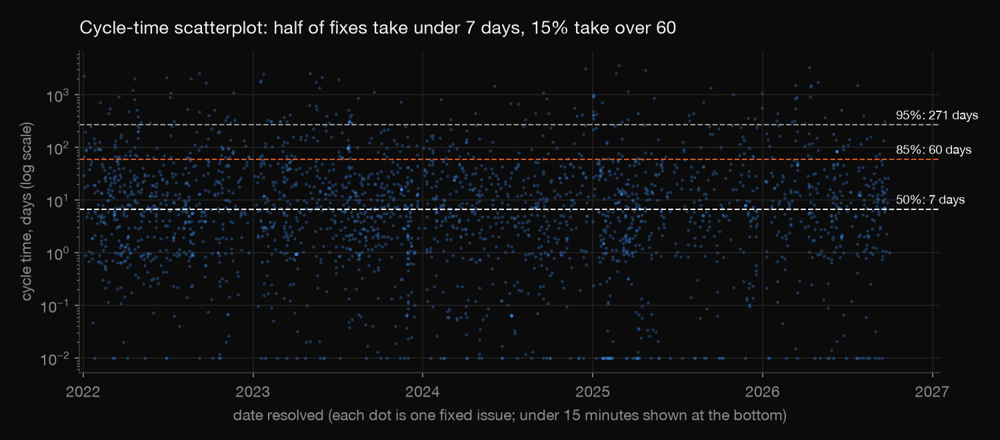
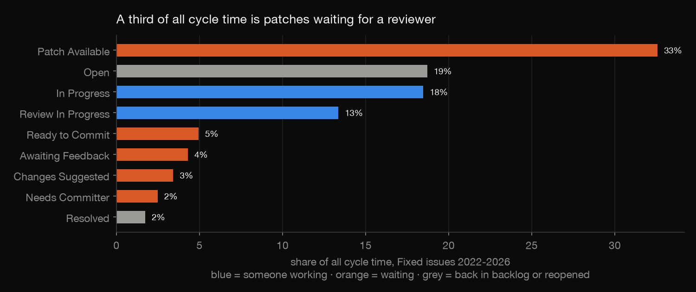
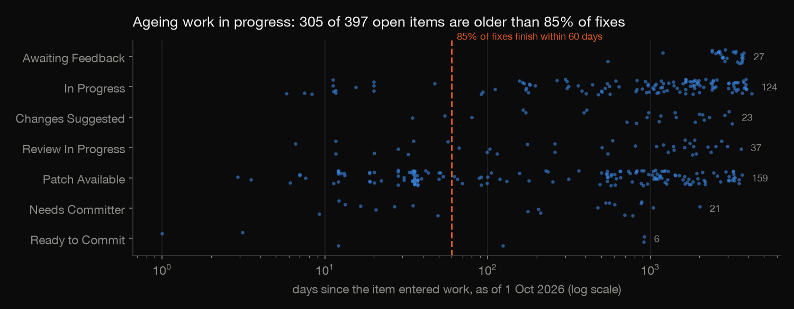
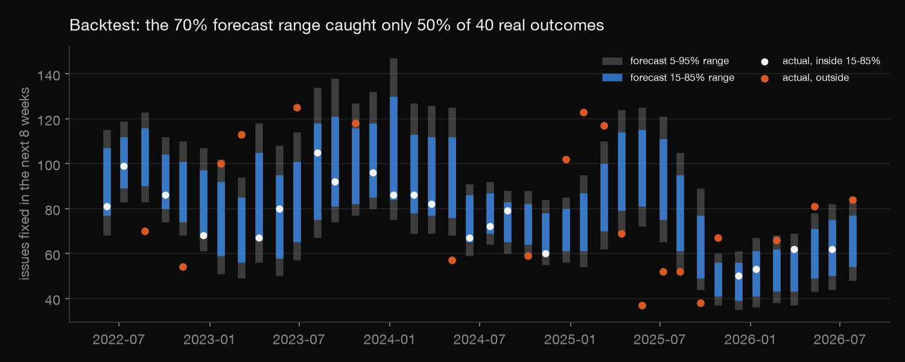

Cassandra delivery flow report
Apache Cassandra project, Jira data to 2026-10-01. 2,498 fixed issues resolved since 2022 that passed through a working state.
Summary
- Half of fixes finish within 7 days of work starting; 85% within 60 days. Use 60 days as the service-level expectation.
- Patches waiting for a reviewer are the largest single share of cycle time. Overall, 48% of cycle time is waiting.
- 305 of 397 items shown as in progress or in review are older than 60 days. Most are stale tickets, and they make work in progress look about 5 times larger than it is.
- Next 8 weeks: a median of 75 fixes. Treat 57-93 as a rough two-in-three range, not 90%: in backtests the model's ranges were too narrow.
Key numbers
| Measure | Value |
|---|---|
| Cycle time, 50% / 85% / 95% of fixes | 7 / 60 / 271 days |
| Lead time (created to fixed), 50% / 85% | 16 / 154 days |
| Throughput, last 26 weeks | 9.5 fixes a week |
| Share of cycle time spent waiting | 48% |
| Open items in a working or review state | 397, of which 305 older than 60 days |
Cycle time by issue type
| Type | Median | 85% | Fixes |
|---|---|---|---|
| Bug | 5 days | 31 days | 1,194 |
| Improvement | 13 days | 97 days | 731 |
| New Feature | 22 days | 114 days | 157 |
| Task | 4 days | 42 days | 392 |

Where the time goes

Recommendation: review capacity is the bottleneck. A rotating review rota or a limit on open patches would shorten cycle time more than faster coding.
Ageing work in progress

Little's Law check: an average of 273 items in working states at 1.44 fixes a day implies 189-day cycle times, against 64 measured. Counting only items that were eventually fixed, average work in progress is 55, which implies about 38 days in working states. That's the same order as measured. Recommendation: close or move back to the backlog any ticket untouched for 90 days.
Forecast

Monte Carlo from the last 26 weeks' throughput. Backtested from 40 past dates, its 70% range caught 50% of real outcomes and its 90% range 62%. Misses fell on both sides, so the ranges are too narrow (throughput comes in bursts), not biased. Re-forecast every week rather than committing to one date.
Method
Cycle time runs from the first move into In Progress, Patch Available or Review In Progress to resolution, for issues resolved as Fixed. Issues closed as Fixed straight from triage (batch closes) are left out of throughput. Data: the public issues.apache.org Jira REST API; only dates, types and status changes are used.